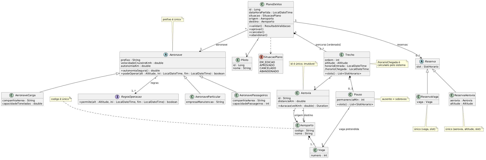
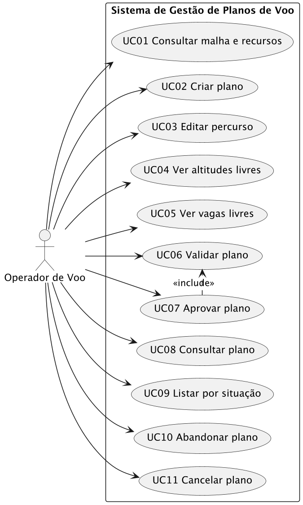
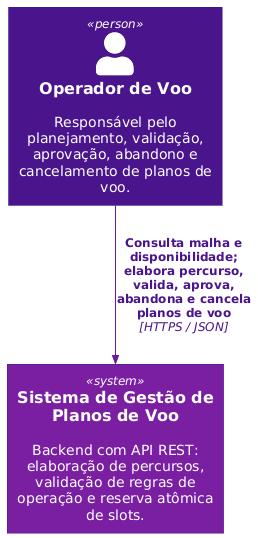
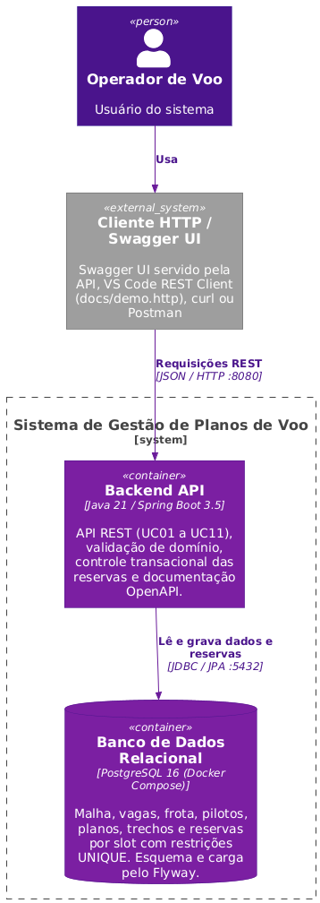
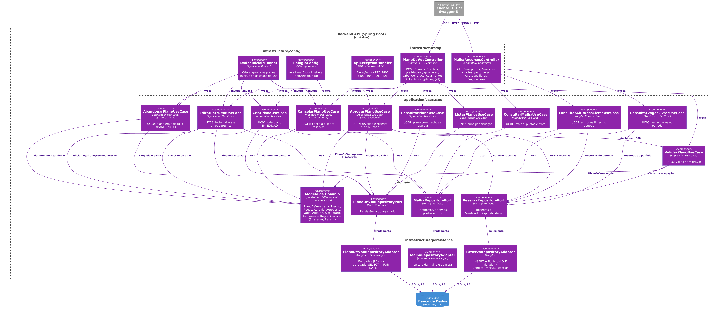

O sistema provê o backend e a arquitetura para criação, validação, controle do ciclo de vida e reserva de recursos
de planos de voo. O domínio tem 19 elementos (15 classes, 1 enumeração e 3 objetos de valor) organizados em torno do
agregado PlanoDeVoo. O modelo prevê 11 casos de uso para o ator Operador de Voo.
Escopo desta entrega: os 11 casos de uso estão implementados e expostos pela API REST (UC01 a UC11). Aeroportos, aerovias, pilotos e aeronaves são dados pré-existentes, carregados por script versionado (migrações Flyway), por orientação do professor: não há casos de uso de cadastro. A consulta desses dados faz parte do UC01.
O documento tem duas partes: (1) modelo de domínio em UML, dicionário, decisões de modelagem, casos de uso e rastreabilidade; (2) arquitetura em C4 (níveis 1 a 3) da versão implementada, estrutura do projeto, persistência e decisões de implementação. Os diagramas desta versão correspondem ao código entregue.
Convenções: horários em LocalDateTime; distâncias em km; velocidades em km/h; altitudes em
pés; permanências em minutos; atributos com “/” são derivados (calculados pelo sistema).
O PlanoDeVoo concentra o ciclo de vida e é dono do percurso (Trechos e Pousos) e das Reservas. As regras de
categoria ficam fora da hierarquia de aeronaves, numa estratégia (RegraOperacao). Leitura: o plano compõe
trechos; cada trecho usa uma aerovia e pode terminar em pouso numa vaga; a aprovação gera reservas por slot de 1 hora.
Altitude, SlotHorario e ResultadoValidacao são objetos de valor e aparecem como tipos de
atributo.

| Classe | Tipo | Atributos principais | Responsabilidade |
|---|---|---|---|
| Aeroporto | Entidade | codigo (único), nome | Ponto da malha aérea; agrega suas vagas |
| Vaga | Entidade | numero | Posição de estacionamento de um aeroporto; recurso reservável |
| Aerovia | Entidade imutável | id (único), distanciaKm | Ligação orientada origem → destino; calcula a duração do voo para uma velocidade (arredondada para cima ao minuto) |
| Altitude | Objeto de valor | pes (25.000–35.000, passo 1.000) | Garante que só existam níveis de voo válidos |
| Piloto | Entidade | id, nome | Responsável pelo plano (sem regras próprias) |
| Aeronave | Entidade abstrata | prefixo (único), velocidadeCruzeiroKmh, autonomiaKm | Calcula a autonomia segura (85%) e delega a regra de operação às suas RegraOperacao |
| AeronaveParticular | Subclasse | empresaManutencao | Categoria particular |
| AeronavePassageiros | Subclasse | companhiaAerea, capacidadePassageiros | Categoria comercial de passageiros |
| AeronaveCarga | Subclasse | companhiaAerea, capacidadeToneladas | Categoria comercial de carga |
| RegraOperacao | Interface (Strategy) | — | Diz se uma aeronave pode usar uma altitude num intervalo. Implementações: AltitudesPermitidas, AltitudeMinima, JanelaHoraria |
| PlanoDeVoo | Entidade (raiz de agregado) | id, dataHoraPartida, situacao | Controla o ciclo de vida, guarda o percurso e as reservas e valida o plano |
| SituacaoPlano | Enumeração | EM_EDICAO, APROVADO, CANCELADO, ABANDONADO | Estados possíveis do plano |
| Trecho | Entidade (parte do plano) | ordem, altitude, horarioEntrada, /horarioChegada | Um uso de aerovia no percurso; calcula a chegada e os slots ocupados |
| Pouso | Objeto de valor | permanenciaMin | Parada num aeroporto, com a vaga pretendida; ausência = sobrevoo |
| SlotHorario | Objeto de valor | inicio (hora cheia) | Janela de 1 hora usada no controle de ocupação |
| Reserva | Entidade abstrata | slot | Ocupação efetivada na aprovação |
| ReservaAerovia | Subclasse | aerovia, altitude | Ocupa uma altitude de uma aerovia num slot |
| ReservaVaga | Subclasse | vaga | Ocupa uma vaga num slot |
| ResultadoValidacao | Objeto de valor | violacoes[] (Violacao: codigo, trecho, mensagem) | Lista todas as violações encontradas, não só a primeira |
| # | Decisão adotada | Alternativa considerada | Justificativa |
|---|---|---|---|
| D1 | Aeronave abstrata com subclasses por categoria; regra de altitude/horário extraída para a interface RegraOperacao (Strategy) | Uma classe Aeronave com campo categoria e if/switch nas regras | O enunciado avisa que virão novas categorias e regras. Com Strategy, uma regra nova é uma classe nova, sem mexer nas existentes (aberto/fechado) |
| D2 | PlanoDeVoo é a raiz do agregado: Trechos e Pousos só existem dentro dele e só mudam através dele | Trechos como entidades independentes, editadas direto pela API | Garante a regra “somente planos em edição podem ser modificados” num só lugar |
| D3 | Pouso opcional no Trecho: sem pouso = sobrevoo | Enum tipoChegada + campos de vaga/permanência que podem ficar nulos | Evita estados inválidos (sobrevoo com vaga). A regra de pouso obrigatório no destino fica na validação |
| D4 | horarioChegada é derivado (distância ÷ velocidade); o usuário informa só a entrada | Usuário informa entrada e chegada e o sistema compara | Uma única fonte de verdade. A validação compara a entrada do trecho seguinte com a chegada calculada |
| D5 | Uma Reserva por slot de 1 hora, com unicidade (aerovia, altitude, slot) e (vaga, slot) | Uma reserva por intervalo (início–fim) e checagem de sobreposição | A unicidade vira restrição no banco. Dois planos concorrentes não conseguem reservar o mesmo slot, e a aprovação fica atômica |
| D6 | Aerovia imutável e referenciada por id | Permitir editar distância ou excluir | Exigência do enunciado: preserva os planos e reservas que já usam a aerovia |
| D7 | Vaga é uma entidade composta pelo Aeroporto; a quantidade de vagas é implícita pela composição | Atributo quantidadeVagas no Aeroporto e referência por número | O plano indica a vaga pretendida e a reserva aponta para uma vaga específica. Modelar como entidade permite unicidade (vaga, slot) direto no banco |
O Operador de Voo interage com a API REST por 11 casos de uso. A aprovação (UC07) inclui obrigatoriamente a validação (UC06): a aprovação repete toda a validação com a disponibilidade do momento exato (seção 6.5 do enunciado).

Todos os casos de uso estão implementados. A tabela liga cada um à sua regra principal e ao endpoint que o expõe.
| ID | Caso de uso | Regra-chave | Endpoint |
|---|---|---|---|
| UC01 | Consultar malha e recursos | Aeroportos, aerovias, pilotos e frota (dados carregados por script; só leitura) | GET /aeroportos, /aerovias, /pilotos, /aeronaves (e por id) |
| UC02 | Criar plano de voo | Nasce em edição, sem trechos | POST /planos |
| UC03 | Editar percurso do plano | Só em edição; não reserva recursos | POST, PUT, DELETE /planos/{id}/trechos |
| UC04 | Consultar altitudes disponíveis em aerovia | Situação do momento; não reserva | GET /aerovias/{id}/altitudes-livres |
| UC05 | Consultar vagas disponíveis em aeroporto | Situação do momento; não reserva | GET /aeroportos/{codigo}/vagas-livres |
| UC06 | Validar plano | Não muda estado nem reserva | POST /planos/{id}/validacao |
| UC07 | Aprovar plano | «include» UC06; reserva tudo ou nada | POST /planos/{id}/aprovacao |
| UC08 | Consultar plano por identificador | Qualquer situação, com trechos, horários e reservas | GET /planos/{id} |
| UC09 | Listar planos por situação | Inclui cancelados e abandonados | GET /planos?situacao= |
| UC10 | Abandonar plano | Só em edição; nada a liberar | POST /planos/{id}/abandono |
| UC11 | Cancelar plano | Só aprovado com partida futura; libera reservas | POST /planos/{id}/cancelamento |
UC03 agrupa as operações de edição: POST /planos/{id}/trechos (adicionar), PUT e DELETE
/planos/{id}/trechos/{ordem} (alterar e remover), incluindo altitude, sobrevoo ou pouso, vaga e permanência.
UC04 e UC05 recebem o período em inicio e fim.
Fluxo: o operador lista aeroportos (com o total de vagas), aerovias (origem, destino e distância), pilotos e aeronaves (com os dados da categoria e as regras de operação), ou consulta um item pelo identificador. Exceções: item inexistente (404). Pós-condição: nada é alterado.
Pré-condição: piloto, aeronave e aeroportos existentes. Fluxo: o operador informa piloto, aeronave, origem, destino e partida; o sistema resolve as referências e cria o plano EM_EDICAO, sem trechos. Exceções: referência inexistente (404); origem igual ao destino (422); campos ausentes (400). Pós-condição: plano em edição, sem reservas.
Pré-condição: plano EM_EDICAO. Fluxo: o plano é carregado com bloqueio e recebe a inclusão, alteração ou remoção de trechos; a resposta traz duração e chegada calculadas de cada trecho. Exceções: plano fora de edição (409); plano, trecho, aerovia ou vaga inexistente (404); altitude inválida (422). Pós-condição: percurso atualizado, sem reservas.
Fluxo: o operador informa a aerovia (ou o aeroporto) e o período; o sistema calcula os slots de 1 hora que o período toca e devolve as altitudes (ou vagas) livres em todos esses slots, além das ocupadas, com o slot e o plano que as reservou. Exceções: recurso inexistente (404); parâmetro ausente ou mal formatado (400); fim não posterior ao início (422 PERIODO_INVALIDO). Pós-condição: nada é reservado; a aprovação continua revalidando por conta própria.
Pré-condição: plano EM_EDICAO. Fluxo: verifica percurso contínuo, horários e durações, regras de operação da categoria, limite de 85% da autonomia e disponibilidade de slots de aerovias e vagas. Exceções: plano fora de edição (409). Pós-condição: laudo com todas as violações (200), sem alterar estado nem criar reservas.
Pré-condição: plano EM_EDICAO. Fluxo: numa transação, bloqueia o plano
(SELECT … FOR UPDATE), executa UC06 com a disponibilidade atual, grava as reservas por slot (com flush) e passa
o plano a APROVADO. Exceções: violação de regra (422 com lista); conflito concorrente de slot (409,
rollback total); plano fora de edição (409). Pós-condição: plano aprovado com reservas únicas, ou
nada gravado.
Fluxo: GET /planos/{id} devolve o plano completo, em qualquer situação, com trechos,
horários calculados e reservas. GET /planos?situacao= devolve o resumo dos planos EM_EDICAO, APROVADO,
CANCELADO ou ABANDONADO; sem o parâmetro, todos. Exceções: plano inexistente (404); situação
desconhecida (400). Pós-condição: nada é alterado.
Pré-condição: plano EM_EDICAO. Fluxo: numa transação, bloqueia o plano e o passa a ABANDONADO. Exceções: plano fora de edição (409 PLANO_NAO_EDITAVEL). Pós-condição: plano congelado para consulta; sem reservas a liberar.
Pré-condição: plano APROVADO com partida futura. Fluxo: numa transação, remove todas as reservas e passa o plano a CANCELADO, preservando seus dados. Exceções: plano não aprovado (409 PLANO_NAO_CANCELAVEL); voo já executado (409 VOO_JA_EXECUTADO). Pós-condição: slots liberados.
| Regra (seção do enunciado) | Onde fica no modelo / código | Caso de uso |
|---|---|---|
| Aerovias orientadas e imutáveis (2) | Aerovia: origem e destino distintos, sem operações de alteração; entidade @Immutable | UC01, UC03 |
| Consultar a rede aérea, pilotos e aeronaves (2, 8.1) | ConsultarMalhaUseCase sobre MalhaRepositoryPort | UC01 |
| Particular só a 25.000–27.000 pés (3) | AltitudesPermitidas, na categoria particular | UC06, UC07 |
| Passageiros só a partir de 28.000 pés (3) | AltitudeMinima, na categoria passageiros | UC06, UC07 |
| Carga só entre 00:00 e 06:00, todo o trecho (3) | JanelaHoraria, na categoria carga | UC06, UC07 |
| Autonomia com margem de 15%, reinicia no pouso (3, 6.3) | Aeronave.autonomiaSegura() + PlanoDeVoo.validar() | UC06 |
| Percurso contínuo da origem ao destino (4.1) | PlanoDeVoo.validar() | UC06 |
| Chegada = entrada + distância ÷ velocidade (4.1) | Trecho./horarioChegada (derivado) | UC03, UC06 |
| Pouso obrigatório no destino final (4.2) | Último Trecho deve ter Pouso | UC06 |
| Altitudes de 25.000 a 35.000, passo 1.000 (5.1) | Objeto de valor Altitude | UC03, UC04 |
| Slots de 1 h alinhados à hora cheia (5.1, 5.2) | SlotHorario; Trecho.slots() e Pouso.slots() | UC04, UC05, UC06 |
| Consulta de disponibilidade sem reservar (5.3) | ConsultarAltitudesLivresUseCase e ConsultarVagasLivresUseCase (readOnly); livre = livre em todos os slots do período | UC04, UC05 |
| Altitude/vaga não pode ser usada por dois planos no mesmo slot (5.1, 5.2) | Unicidade em ReservaAerovia e ReservaVaga (UNIQUE no banco) | UC07 |
| Aprovação tudo ou nada (5.4, 6.5) | Transação em AprovarPlanoUseCase + flush das reservas | UC07 |
| Voo começa e termina no mesmo dia; permanência final pode passar da meia-noite (5.5) | PlanoDeVoo.validar(); slots da permanência cobrem o dia seguinte | UC06 |
| Consulta por identificador e por situação (6.6) | ConsultarPlanoUseCase e ListarPlanosUseCase | UC08, UC09 |
| Abandono só em edição, sem liberar recursos (6.7) | PlanoDeVoo.abandonar() + AbandonarPlanoUseCase | UC10 |
| Cancelamento libera reservas, só se a partida for futura (6.8) | PlanoDeVoo.cancelar(agora) + remoção das reservas na mesma transação | UC11 |
| Só planos em edição podem ser modificados (6.8) | PlanoDeVoo como raiz do agregado verifica a situação; edição bloqueia o plano como a aprovação | UC03, UC10 |
Estilo adotado: Clean Architecture / Ports and Adapters. As dependências apontam para dentro
(infrastructure → application → domain); o domínio não depende de Spring nem de JPA.
Justificativa: as regras (percurso, autonomia, slots, ciclo de vida) são o valor do sistema e precisam ser verificáveis sem banco nem framework (72 testes de unidade rodam em milissegundos); a persistência e a API são detalhes substituíveis; novas categorias e regras entram como novas classes (Strategy) sem alterar a validação; e as operações que alteram vários registros (aprovar, cancelar, abandonar, editar) têm fronteira transacional explícita na camada de aplicação.
O Operador de Voo consulta a malha e a disponibilidade e planeja, valida, aprova, abandona e cancela planos usando o sistema. Não há sistemas externos integrados: malha, frota e pilotos são dados do próprio sistema.

O escopo é só o backend; o cliente (Swagger UI, REST Client, curl ou Postman) aparece como sistema externo. Os
contêineres são: Backend API (Java 21, Spring Boot 3.5, springdoc-openapi, Flyway), que expõe os
casos de uso UC01 a UC11, aplica as regras do domínio, delimita as transações e aplica migrações e carga inicial; e
Banco relacional (PostgreSQL 16 via Docker Compose, volume pgdata), com as restrições
UNIQUE (aerovia_id, altitude_pes, slot_inicio) e UNIQUE (vaga_id, slot_inicio), que garantem a
exclusividade dos recursos. Comunicação: JSON/HTTP na porta 8080 e JDBC/JPA na 5432.

A figura mostra os componentes realmente implementados, agrupados pelos pacotes do código. As setas de dependência vão dos controladores para os casos de uso e destes para o domínio e suas portas; os adaptadores de persistência implementam as portas.

| Pacote | Componente | Responsabilidade |
|---|---|---|
| infrastructure/api | PlanoDeVooController | /planos: converte HTTP em chamadas aos casos de uso; sem regra de negócio. |
| MalhaRecursosController | /aeroportos, /aerovias, /pilotos, /aeronaves e as consultas de disponibilidade. Só leitura. | |
| infrastructure/api/exception | ApiExceptionHandler | Exceções de domínio → ProblemDetail (RFC 7807) com código estável (400, 404, 409, 422). |
| application/usecases | ConsultarMalhaUseCase (UC01) | Aeroportos, aerovias, pilotos e aeronaves, com dados da categoria e regras. |
| CriarPlanoUseCase (UC02) | Resolve piloto, aeronave e aeroportos (404) e chama PlanoDeVoo.criar. | |
| EditarPercursoUseCase (UC03) | Bloqueia o plano, resolve aerovia e vaga (404) e chama adicionar/alterar/removerTrecho. | |
| ConsultarAltitudesLivresUseCase (UC04) | Altitudes livres em todos os slots do período; uma consulta de reservas por aerovia. | |
| ConsultarVagasLivresUseCase (UC05) | Vagas livres em todos os slots do período; uma consulta de reservas por aeroporto. | |
| ValidarPlanoUseCase (UC06) | Executa PlanoDeVoo.validar contra as reservas atuais, sem gravar nada. | |
| AprovarPlanoUseCase (UC07) | @Transactional: bloqueia, revalida (UC06), grava reservas com flush e aprova. | |
| ConsultarPlanoUseCase (UC08) | GET /planos/{id}: plano com trechos, horários e reservas. | |
| ListarPlanosUseCase (UC09) | GET /planos?situacao=: resumo dos planos de uma situação, ou de todos. | |
| AbandonarPlanoUseCase (UC10) | @Transactional: bloqueia, abandonar() e grava a situação. | |
| CancelarPlanoUseCase (UC11) | @Transactional: cancelar(agora), remove as reservas e grava a situação. | |
| domain/model (+aeronave, +reserva) | Modelo de domínio | Regras de percurso, horário, autonomia, slots, ciclo de vida e Strategy de categorias. |
| domain/repository | Portas | PlanoDeVooRepositoryPort, ReservaRepositoryPort (+ VerificadorDisponibilidade), MalhaRepositoryPort. |
| infrastructure/persistence | Adaptadores e mappers | JPA separado do domínio; UNIQUE violada → ConflitoReservaException; FOR UPDATE no plano. |
| infrastructure/config | RelogioConfig, OpenApiConfig, DadosIniciaisRunner | Clock injetável, documentação OpenAPI e carga inicial pelos próprios casos de uso. |
AprovarPlanoUseCase, que abre a transação e carrega o plano com
SELECT … FOR UPDATE.ValidarPlanoUseCase («include» UC06) com a disponibilidade atual; se houver violações, responde 422
com a lista e o plano continua EM_EDICAO.PlanoDeVoo.aprovar() gera uma reserva por slot, o plano é salvo como APROVADO e as reservas são
gravadas com flush().ConflitoReservaException (409) e a transação inteira é desfeita: nenhuma reserva parcial permanece.Edição, cancelamento e abandono usam o mesmo bloqueio do plano. Uma edição que chega durante a aprovação espera o fim da transação, encontra o plano APROVADO e recebe 409, então o percurso aprovado é sempre o que gerou as reservas.
src/
├── main/
│ ├── java/br/pucrs/projarc/gestaoplanosvoo/
│ │ ├── domain/ # Java puro, sem Spring nem JPA
│ │ │ ├── model/ # PlanoDeVoo, Trecho, Pouso, Aerovia, Aeroporto, Vaga,
│ │ │ │ │ # Piloto, SituacaoPlano, Altitude, SlotHorario,
│ │ │ │ │ # ResultadoValidacao, Violacao, CodigoViolacao
│ │ │ │ ├── aeronave/ # Aeronave + subclasses, RegraOperacao (Strategy) e
│ │ │ │ │ # AltitudesPermitidas, AltitudeMinima, JanelaHoraria
│ │ │ │ └── reserva/ # Reserva, ReservaAerovia, ReservaVaga
│ │ │ ├── repository/ # Portas: PlanoDeVooRepositoryPort, ReservaRepositoryPort,
│ │ │ │ # MalhaRepositoryPort, VerificadorDisponibilidade
│ │ │ └── exception/ # Exceções de domínio (sem HTTP)
│ │ ├── application/
│ │ │ ├── dto/{request,response}/ # Contratos da API
│ │ │ └── usecases/ # um por caso de uso: ConsultarMalha, CriarPlano,
│ │ │ # EditarPercurso, ConsultarAltitudesLivres,
│ │ │ # ConsultarVagasLivres, ValidarPlano, AprovarPlano,
│ │ │ # ConsultarPlano, ListarPlanos, AbandonarPlano, CancelarPlano
│ │ └── infrastructure/
│ │ ├── api/ # PlanoDeVooController, MalhaRecursosController
│ │ │ # + exception/ApiExceptionHandler
│ │ ├── persistence/ # entities/, repositories/, adapters/, mappers/
│ │ └── config/ # RelogioConfig, OpenApiConfig, DadosIniciaisRunner
│ └── resources/
│ ├── application.yml
│ └── db/migration/ # V1__schema, V2__malha_inicial, V3__frota_pilotos
└── test/ # 72 testes de unidade (domain, application)
# + 24 de integração (Testcontainers)
domain/ contém as regras puras e as portas de saída; application/ orquestra os fluxos e define as
transações sem acessar o banco diretamente; infrastructure/ contém os adaptadores de entrada (REST) e saída
(JPA/PostgreSQL), a configuração e a carga inicial.
PostgreSQL 16, esquema e dados versionados pelo Flyway (ddl-auto: none). V1 cria as tabelas e
restrições (incluindo os UNIQUE das reservas e CHECKs de altitude e slot em hora cheia); V2 carrega a malha do
enunciado (POA 41, FLN 16, CWB 26 e GRU 115 vagas; aerovias R1 a R8); V3 carrega 4 pilotos e 6 aeronaves (duas
por categoria). Na primeira execução, o DadosIniciaisRunner cria os planos iniciais pelos casos de uso, de modo
que as reservas são sempre consequência de planos aprovados. Data de referência: 2026-12-01; nesse dia
7 das 8 aerovias têm alguma ocupação (mínimo exigido: 5) e a R6 fica livre. Os dados persistem entre reinicializações
(volume pgdata).
| Plano | Situação | Resumo |
|---|---|---|
| 1 | APROVADO | PR-AZA POA→GRU por R2 a 30.000 pés, 08:10→09:12, pouso GRU vaga 1 |
| 2 | APROVADO | PP-JAT POA→FLN (sobrevoo)→CWB por R1/R4 a 26.000, 14:00→15:02, pouso CWB vaga 1 |
| 3 | APROVADO | PR-CGA (carga) GRU→CWB→FLN por R7/R5 a 32.000, 01:00→02:17 |
| 4 | APROVADO | PR-GOB FLN→POA por R8 a 29.000, 10:30→10:57 |
| 5 | APROVADO | PR-AZA GRU→POA por R3 a 30.000, 18:00→19:02 |
| 6 | APROVADO em 2026-09-01 | Voo já executado: não pode ser cancelado |
| 7 | EM_EDICAO | PP-LEN POA→FLN→CWB em sobrevoo: 608 km > 595 km (autonomia) |
| 8 | ABANDONADO | PP-JAT POA→FLN por R1 a 27.000, 20:00; nunca teve reservas |
| 9 | CANCELADO | PR-AZA CWB→GRU por R6 a 31.000, 12:00→12:26; aprovado e cancelado, reservas liberadas |
Resumo das decisões I1–I22 (alternativas e justificativas completas em docs/decisoes.md), que complementam
D1–D7:
| # | Decisão |
|---|---|
| I1 | Sem casos de uso de cadastro: malha, pilotos e frota entram por script Flyway; a consulta fica na API (UC01) |
| I2 | Duração arredondada para cima ao minuto inteiro (BigDecimal) |
| I3 | Intervalos semiabertos [início, fim) para slots |
| I4 | Edição progressiva: POST no fim; PUT e DELETE por ordem, com renumeração |
| I5 | Planos iniciais criados pelos próprios casos de uso (DadosIniciaisRunner) |
| I6 | Exclusividade garantida por UNIQUE no banco + flush() na aprovação |
| I7 | Lock pessimista do plano em toda operação que o altera (edição, aprovação, cancelamento e abandono); @Version como segunda barreira |
| I8 | Entidades JPA separadas das entidades de domínio |
| I9 | Regras de operação declaradas pela subclasse da aeronave (Strategy) |
| I10 | Validação acumulativa; aprovação revalida com a disponibilidade do momento |
| I11 | Vaga procurada no aeroporto de destino da aerovia do trecho |
| I12 | Clock injetável, com opção de relógio fixo |
| I13 | Data de referência 2026-12-01 |
| I14 | Hierarquia de aeronaves em tabela única |
| I15 | Esquema controlado só pelo Flyway (ddl-auto: none) |
| I16 | Erros em RFC 7807 (ProblemDetail) com código estável |
| I17 | Spring Boot 3.5 / Java 21 |
| I18 | Disponibilidade: livre em todos os slots do período, com uma consulta de reservas por recurso |
| I19 | Listagem de planos devolve um resumo; o detalhe fica em GET /planos/{id} |
| I20 | Abandono como transição de estado (POST /abandono), com o mesmo bloqueio do cancelamento |
| I21 | Carga inicial inclui um plano abandonado e um cancelado |
| I22 | A aprovação não exige partida futura; só o cancelamento depende do relógio |
72 testes de unidade (sem Spring nem banco) cobrem tempo e chegada, slots (incluindo os exemplos do enunciado), altitude, regras por categoria (inclusive carga terminando às 06:00 e cruzando a meia-noite), autonomia (inclusive exatamente no limite de 85%), percurso, pousos, disponibilidade, ciclo de vida e as consultas de altitudes e vagas livres.
24 testes de integração com PostgreSQL real (Testcontainers) cobrem: validar não cria reservas;
aprovação com violação não grava nada; duas aprovações concorrentes do mesmo slot resultam em uma aprovada e um 409 sem
reserva parcial; uma edição concorrente com a aprovação espera o bloqueio e recebe 409 sem alterar o percurso
aprovado; cancelar plano futuro libera as reservas; cancelar plano passado responde 409; editar plano aprovado
responde 409; abandono e listagem pelas quatro situações; altitudes e vagas livres contra a carga inicial; consultas da
malha e da frota; e os erros 400, 404 e 422 da API. A API é documentada em OpenAPI (/swagger-ui.html) e o
roteiro de demonstração está em docs/demo.http.
Novas categorias de aeronave exigem uma subclasse de domínio, uma entidade e um ramo no MalhaMapper (e, para
exibir os campos próprios na API, um ramo em AeronaveDetalheResponse); novas regras, uma classe que implementa
RegraOperacao; novos aeroportos e aerovias, uma nova migração Flyway, sem alterar código. Se o cadastro pela API
vier a ser exigido, ele entra como novos casos de uso em application/usecases, usando as mesmas portas, sem
oferecer alteração nem exclusão de aerovias.
@startuml
skinparam classAttributeIconSize 0
hide empty members
interface RegraOperacao {
+permite(alt : Altitude, ini : LocalDateTime, fim : LocalDateTime) : boolean
}
abstract class Aeronave {
prefixo : String
velocidadeCruzeiroKmh : double
autonomiaKm : double
+autonomiaSegura() : double
+podeOperar(alt : Altitude, ini : LocalDateTime, fim : LocalDateTime) : boolean
}
note top of Aeronave : prefixo é único
class AeronaveParticular {
empresaManutencao : String
}
class AeronavePassageiros {
companhiaAerea : String
capacidadePassageiros : int
}
class AeronaveCarga {
companhiaAerea : String
capacidadeToneladas : double
}
Aeronave <|-- AeronaveParticular
Aeronave <|-- AeronavePassageiros
Aeronave <|-- AeronaveCarga
Aeronave "*" --> "1..*" RegraOperacao : regras
class Piloto {
id : Long
nome : String
}
enum SituacaoPlano {
EM_EDICAO
APROVADO
CANCELADO
ABANDONADO
}
class PlanoDeVoo {
id : Long
dataHoraPartida : LocalDateTime
situacao : SituacaoPlano
origem : Aeroporto
destino : Aeroporto
+validar() : ResultadoValidacao
+aprovar()
+cancelar()
+abandonar()
}
PlanoDeVoo "*" --> "1" Piloto
PlanoDeVoo "*" --> "1" Aeronave : aeronave
PlanoDeVoo ..> SituacaoPlano
class Trecho {
ordem : int
altitude : Altitude
horarioEntrada : LocalDateTime
/horarioChegada : LocalDateTime
+slots() : List<SlotHorario>
}
note right of Trecho : /horarioChegada é\ncalculado pelo sistema
class Pouso {
permanenciaMin : int
+slots() : List<SlotHorario>
}
PlanoDeVoo "1" *-- "1..*" Trecho : percurso [ordenado]
Trecho "1" *-- "0..1" Pouso
note right of Pouso : ausente = sobrevoo
class Aerovia {
id : String
distanciaKm : double
+duracao(velKmh : double) : Duration
}
note top of Aerovia : id é único; imutável
class Aeroporto {
codigo : String
nome : String
}
note top of Aeroporto : codigo é único
class Vaga {
numero : int
}
Trecho "*" --> "1" Aerovia
Aerovia "*" --> "1" Aeroporto : origem
Aerovia "*" --> "1" Aeroporto : destino
Aeroporto "1" *-- "1..*" Vaga
Pouso "*" --> "1" Vaga : vaga pretendida
abstract class Reserva {
slot : SlotHorario
}
class ReservaAerovia {
aerovia : Aerovia
altitude : Altitude
}
class ReservaVaga {
vaga : Vaga
}
Reserva <|-- ReservaAerovia
Reserva <|-- ReservaVaga
PlanoDeVoo "1" --> "0..*" Reserva : reservas
note bottom of ReservaAerovia : único (aerovia, altitude, slot)
note bottom of ReservaVaga : único (vaga, slot)
@enduml
@startuml
left to right direction
actor "Operador de Voo" as Operador
rectangle "Sistema de Gestão de Planos de Voo" {
usecase "UC01 Consultar malha e recursos" as UC01
usecase "UC02 Criar plano" as UC02
usecase "UC03 Editar percurso" as UC03
usecase "UC04 Ver altitudes livres" as UC04
usecase "UC05 Ver vagas livres" as UC05
usecase "UC06 Validar plano" as UC06
usecase "UC07 Aprovar plano" as UC07
usecase "UC08 Consultar plano" as UC08
usecase "UC09 Listar por situação" as UC09
usecase "UC10 Abandonar plano" as UC10
usecase "UC11 Cancelar plano" as UC11
}
Operador --> UC01
Operador --> UC02
Operador --> UC03
Operador --> UC04
Operador --> UC05
Operador --> UC06
Operador --> UC07
Operador --> UC08
Operador --> UC09
Operador --> UC10
Operador --> UC11
UC07 .> UC06 : <<include>>
@enduml
@startuml
!include https://raw.githubusercontent.com/plantuml-stdlib/C4-PlantUML/master/C4_Context.puml
UpdateElementStyle("person", $bgColor="#4A148C", $fontColor="#ffffff", $borderColor="#311B92")
UpdateElementStyle("system", $bgColor="#7B1FA2", $fontColor="#ffffff", $borderColor="#4A148C")
UpdateRelStyle($lineColor="#6A1B9A", $textColor="#4A148C")
Person(operador, "Operador de Voo", "Responsável pelo planejamento, validação, aprovação, abandono e cancelamento de planos de voo.")
System(sistemaVoos, "Sistema de Gestão de Planos de Voo", "Backend com API REST: elaboração de percursos, validação de regras de operação e reserva atômica de slots.")
Rel(operador, sistemaVoos, "Consulta malha e disponibilidade; elabora percurso, valida, aprova, abandona e cancela planos de voo", "HTTPS / JSON")
@enduml
@startuml
!include https://raw.githubusercontent.com/plantuml-stdlib/C4-PlantUML/master/C4_Container.puml
UpdateElementStyle("person", $bgColor="#4A148C", $fontColor="#ffffff", $borderColor="#311B92")
UpdateElementStyle("external_system", $bgColor="#9E9E9E", $fontColor="#ffffff", $borderColor="#616161")
UpdateElementStyle("container", $bgColor="#7B1FA2", $fontColor="#ffffff", $borderColor="#4A148C")
UpdateElementStyle("containerDb", $bgColor="#311B92", $fontColor="#ffffff", $borderColor="#1A237E")
UpdateRelStyle($lineColor="#6A1B9A", $textColor="#4A148C")
Person(operador, "Operador de Voo", "Usuário do sistema")
' Correção: o cliente fica FORA da fronteira do sistema; o escopo do trabalho é só o backend.
System_Ext(cliente, "Cliente HTTP / Swagger UI", "Swagger UI servido pela API, VS Code REST Client (docs/demo.http), curl ou Postman")
System_Boundary(c1, "Sistema de Gestão de Planos de Voo") {
Container(api, "Backend API", "Java 21 / Spring Boot 3.5", "API REST (UC01 a UC11), validação de domínio, controle transacional das reservas e documentação OpenAPI.")
ContainerDb(db, "Banco de Dados Relacional", "PostgreSQL 16 (Docker Compose)", "Malha, vagas, frota, pilotos, planos, trechos e reservas por slot com restrições UNIQUE. Esquema e carga pelo Flyway.")
}
Rel(operador, cliente, "Usa")
Rel(cliente, api, "Requisições REST", "JSON / HTTP :8080")
Rel(api, db, "Lê e grava dados e reservas", "JDBC / JPA :5432")
@enduml
@startuml
!include https://raw.githubusercontent.com/plantuml-stdlib/C4-PlantUML/master/C4_Component.puml
UpdateElementStyle("component", $bgColor="#8E24AA", $fontColor="#ffffff", $borderColor="#5E35B1")
UpdateElementStyle("containerDb", $bgColor="#311B92", $fontColor="#ffffff", $borderColor="#1A237E")
UpdateElementStyle("external_system", $bgColor="#9E9E9E", $fontColor="#ffffff", $borderColor="#616161")
UpdateRelStyle($lineColor="#6A1B9A", $textColor="#4A148C")
System_Ext(cliente, "Cliente HTTP / Swagger UI")
Container_Boundary(api, "Backend API (Spring Boot)") {
Boundary(infraApi, "infrastructure/api") {
Component(planoCtrl, "PlanoDeVooController", "Spring REST Controller", "POST /planos, /trechos, /validacao, /aprovacao, /abandono, /cancelamento; GET /planos, /planos/{id}")
Component(malhaCtrl, "MalhaRecursosController", "Spring REST Controller", "GET /aeroportos, /aerovias, /pilotos, /aeronaves; /altitudes-livres, /vagas-livres")
Component(handler, "ApiExceptionHandler", "@RestControllerAdvice", "Exceções -> RFC 7807 (400, 404, 409, 422)")
}
Boundary(app, "application/usecases") {
Component(criarUC, "CriarPlanoUseCase", "Application Use Case", "UC02: cria plano EM_EDICAO")
Component(editarUC, "EditarPercursoUseCase", "Application Use Case", "UC03: inclui, altera e remove trechos")
Component(validarUC, "ValidarPlanoUseCase", "Application Use Case", "UC06: valida sem gravar")
Component(aprovarUC, "AprovarPlanoUseCase", "Application Use Case, @Transactional", "UC07: revalida e reserva tudo ou nada")
Component(cancelarUC, "CancelarPlanoUseCase", "Application Use Case, @Transactional", "UC11: cancela e libera reservas")
Component(consultarUC, "ConsultarPlanoUseCase", "Application Use Case", "UC08: plano com trechos e reservas")
Component(listarUC, "ListarPlanosUseCase", "Application Use Case", "UC09: planos por situação")
Component(abandonarUC, "AbandonarPlanoUseCase", "Application Use Case, @Transactional", "UC10: plano em edição -> ABANDONADO")
Component(malhaUC, "ConsultarMalhaUseCase", "Application Use Case", "UC01: malha, pilotos e frota")
Component(altitudesUC, "ConsultarAltitudesLivresUseCase", "Application Use Case", "UC04: altitudes livres no período")
Component(vagasUC, "ConsultarVagasLivresUseCase", "Application Use Case", "UC05: vagas livres no período")
}
Boundary(dom, "domain") {
Component(dominio, "Modelo de Domínio", "model/, model/aeronave/, model/reserva/", "PlanoDeVoo (raiz), Trecho, Pouso, Aerovia, Aeroporto, Vaga, Altitude, SlotHorario, Aeronave + RegraOperacao (Strategy), Reserva")
Component(planoPort, "PlanoDeVooRepositoryPort", "Porta (interface)", "Persistência do agregado")
Component(reservaPort, "ReservaRepositoryPort", "Porta (interface)", "Reservas e VerificadorDisponibilidade")
Component(malhaPort, "MalhaRepositoryPort", "Porta (interface)", "Aeroportos, aerovias, pilotos e frota")
}
Boundary(infraPers, "infrastructure/persistence") {
Component(planoAd, "PlanoDeVooRepositoryAdapter", "Adapter + PlanoMapper", "Entidades JPA <-> agregado; SELECT ... FOR UPDATE")
Component(reservaAd, "ReservaRepositoryAdapter", "Adapter", "INSERT + flush; UNIQUE violada -> ConflitoReservaException")
Component(malhaAd, "MalhaRepositoryAdapter", "Adapter + MalhaMapper", "Leitura da malha e da frota")
}
Boundary(infraCfg, "infrastructure/config") {
Component(clock, "RelogioConfig", "@Configuration", "java.time.Clock injetável (app.relogio-fixo)")
Component(runner, "DadosIniciaisRunner", "ApplicationRunner", "Cria e aprova os planos iniciais pelos casos de uso")
}
}
ContainerDb(db, "Banco de Dados", "PostgreSQL 16")
Rel(cliente, planoCtrl, "JSON / HTTP")
Rel(planoCtrl, criarUC, "Invoca")
Rel(planoCtrl, editarUC, "Invoca")
Rel(planoCtrl, validarUC, "Invoca")
Rel(planoCtrl, aprovarUC, "Invoca")
Rel(planoCtrl, cancelarUC, "Invoca")
Rel(planoCtrl, consultarUC, "Invoca")
Rel(planoCtrl, listarUC, "Invoca")
Rel(planoCtrl, abandonarUC, "Invoca")
Rel(cliente, malhaCtrl, "JSON / HTTP")
Rel(malhaCtrl, malhaUC, "Invoca")
Rel(malhaCtrl, altitudesUC, "Invoca")
Rel(malhaCtrl, vagasUC, "Invoca")
Rel(aprovarUC, validarUC, "«include» UC06")
Rel(criarUC, dominio, "PlanoDeVoo.criar")
Rel(editarUC, dominio, "adicionar/alterar/removerTrecho")
Rel(validarUC, dominio, "PlanoDeVoo.validar")
Rel(aprovarUC, dominio, "PlanoDeVoo.aprovar -> reservas")
Rel(cancelarUC, dominio, "PlanoDeVoo.cancelar")
Rel(cancelarUC, clock, "agora")
Rel(abandonarUC, dominio, "PlanoDeVoo.abandonar")
Rel(criarUC, malhaPort, "Usa")
Rel(editarUC, malhaPort, "Usa")
Rel(criarUC, planoPort, "Usa")
Rel(editarUC, planoPort, "Bloqueia e salva")
Rel(validarUC, reservaPort, "Consulta ocupação")
Rel(aprovarUC, planoPort, "Bloqueia e salva")
Rel(aprovarUC, reservaPort, "Grava reservas")
Rel(cancelarUC, reservaPort, "Remove reservas")
Rel(consultarUC, planoPort, "Usa")
Rel(listarUC, planoPort, "Usa")
Rel(abandonarUC, planoPort, "Bloqueia e salva")
Rel(malhaUC, malhaPort, "Usa")
Rel(altitudesUC, malhaPort, "Usa")
Rel(altitudesUC, reservaPort, "Reservas do período")
Rel(vagasUC, malhaPort, "Usa")
Rel(vagasUC, reservaPort, "Reservas do período")
Rel(runner, criarUC, "Invoca")
Rel(runner, editarUC, "Invoca")
Rel(runner, aprovarUC, "Invoca")
Rel(runner, abandonarUC, "Invoca")
Rel(runner, cancelarUC, "Invoca")
Rel_U(planoAd, planoPort, "Implementa")
Rel_U(reservaAd, reservaPort, "Implementa")
Rel_U(malhaAd, malhaPort, "Implementa")
Rel(planoAd, db, "SQL / JPA")
Rel(reservaAd, db, "SQL / JPA")
Rel(malhaAd, db, "SQL / JPA")
@enduml